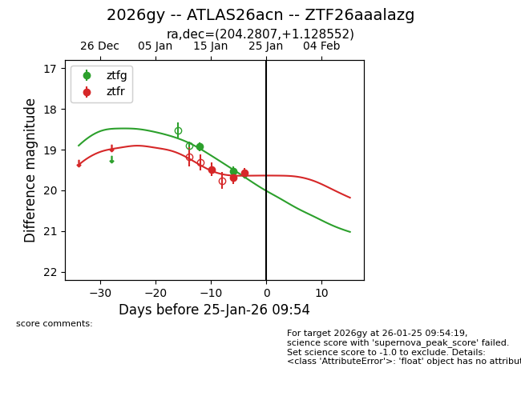
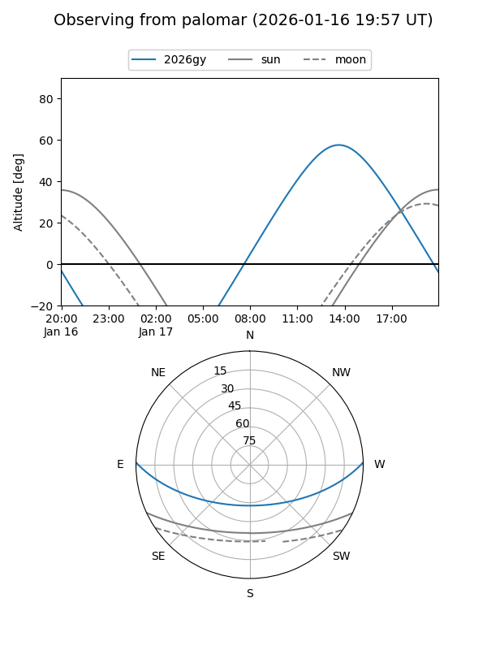
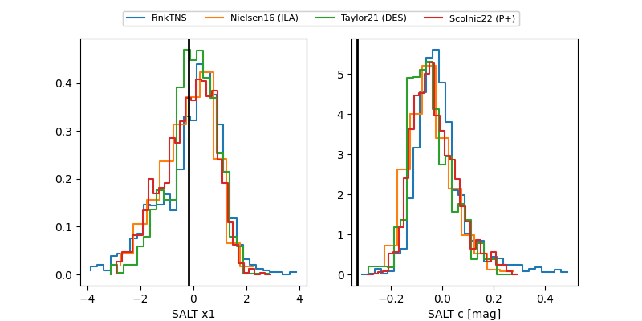

2026gy
Target 2026gy at 2026-01-28 23:06
Aliases and brokers:
FINK: link
Lasair: link
ALeRCE: link
TNS: link
YSE: link
alt names
ZTF26aaalazg (ztf,fink_ztf)
2026gy (tns,yse)
ATLAS26acn (atlas)
Coordinates:
equatorial (ra, dec) = 204.2807,+1.12855
equatorial (HMS+DMS) = 13:37:07.36,+01:07:42.79
galactic (l, b) = (327.6878,+61.78458)
Flags:
Photometry:
last ztfg=19.52, ztfr=19.57
2 ztfg, 3 ztfr detections
Lightcurve

Visibility


Additional plots
